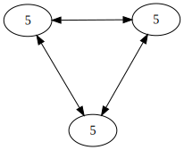

| z, ? | toggle help (this) |
| space, → | next slide |
| shift-space, ← | previous slide |
| d | toggle debug mode |
| ## <ret> | go to slide # |
| c, t | table of contents (vi) |
| f | toggle footer |
| r | reload slides |
| n | toggle notes |
| p | run preshow |
Reid Draper
@reiddraper
Replicas are not updated atomically, but eventually converge.

CC BY-ND 2.0 CTA Web
{:foo 1 :bar 2}
{:baz 1}
{:bar 7}(require 'knockbox.core)
(knockbox.core/resolve [a b c d])(require 'knockbox.core)
(require '[knockbox.sets :as kbsets])
(def original (into (kbsets/lww)
#{:mug :kettle}))(def a (disj original :kettle))
(def b (conj original :coffee))
(def c (conj original :coffee-roaster))
;; this one wins because its
;; timestamp is later
(def d (disj original :coffee-roaster))
(println (knockbox.core/resolve
[a b c d]))
;; => #{:coffee :mug}(def original
(into (kbsets/observed-remove)
#{:crust :sugar :egg}))
(def a (conj original :blueberries))
(def b (conj original :blueberries))
(def c (disj a :blueberries))
(println (knockbox.core/resolve [b c]))
;; => #{:crust :sugar :egg :blueberries}(require '(knockbox core registers))
(def a (knockbox.registers/lww 1))
(def b (knockbox.registers/lww 2))
(def c (knockbox.registers/lww 3))
(.value a)
;; => 1
(.value (knockbox.core/resolve [c b a]))
;; => 3 Coordinated Synchronous
Ref Yes Yes
Atom No Yes
Agent No No
(resolve [a b])
(gc [this time items])(conj a :foo)
(assoc b :bar [1 2 3])A comprehensive study of Convergent and Commutative Replicated Data Types
Shapiro, Preguiça, Baquero, Zawirski
#{:foo :bar}
#{:bar :baz}
(clojure.set/union ...)but what about...
#{:foo :bar}
(disj #{:bar :qux} :bar){:adds #{:foo :qux}
:dels #{:bar}}better, but can't add something back
This is where time comes in... (logical or physical)
{:adds {:foo #{"3359ce86" ...}}
:dels {:foo #{"4ae98f10"}}}Observed-Remove Set
Serialization
Other languages can participate
Music Service ala
Rdio or Spotify
(defbox Account
(:name LWWRegister
:required true)
(:address LWWRegister
:required true)
(:followers ObservedRemoveSet
:default (lww-set)))(def person (Account.))
(-> person
(update-in [:followers] conj :bar)
(assoc-in [:name] "Reid")
(assoc-in [:address] "27 Main"))with no coordination
Deleted/old item comes back
(gc [this
gc-max-seconds
gc-max-items])Counters are hard
{:a 35
:b 43
:c 125
:d 93}Uses Midje
(= (knockbox.core/resolve ?z)
(knockbox.core/resolve
(reverse ?z)))
(= ?x (deserialize (serialize ?x))